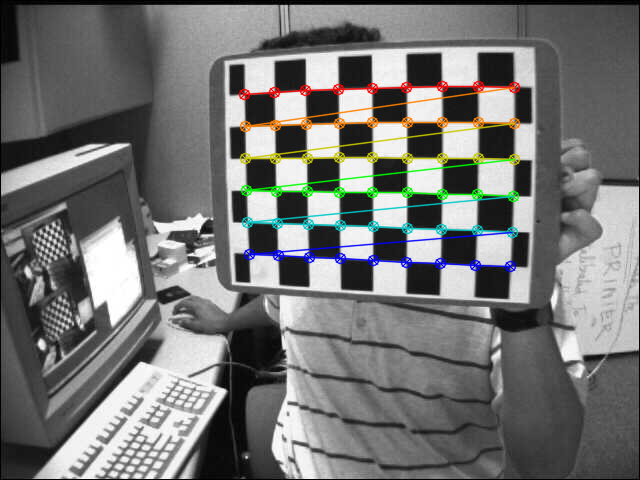
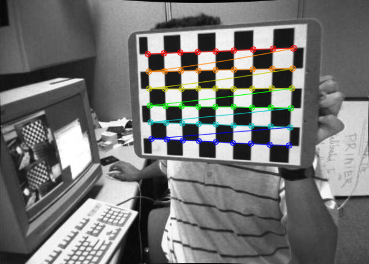

摄像机标定
实验问题
给定若干张图片，计算畸变系数、内参数矩阵和外参数矩阵。
实验环境
操作系统：Ubuntu 14.04.3 LTS
开发环境：Anaconda2-4.0.0, OpenCV 2.4.11
实验过程
相关定义
如今的廉价针孔相机产生了大量的图像失真。两个主要的失真是径向畸变和切向畸变。摄像机标定
由于径向畸变，直线将出现弯曲。例如，在一张带有国际象棋的图像中，两侧边界不平行。对于这种失真，通过如下公式解决：
\[x_{\text{corrected}} = x ( 1 + k_1 r^2 + k_2 r^4 + k_3 r^6 )\] \[y_{\text{corrected}} = y ( 1 + k_1 r^2 + k_2 r^4 + k_3 r^6 )\]
类似地，切向畸变产生的原因是摄镜头与图像平面不完全平行对齐。所以图像中的一些区域可能看起来比预期更接近。它通过如下公式解决：
\[x_{\text{corrected}} = x + [ 2p_1xy + p_2 (r^2 + 2x^2) ]\] \[y_{\text{corrected}} = y + [ p_1(r^2 + 2y^2) + 2p_2xy ]\]
简而言之，我们需要找到五个参数，称为畸变系数（Distortion cofficients）：
\[\text{Distortion cofficients} = (k_1, k_2, p_1, p_2, k_3)\]
此外，我们需要找到更多的信息，比如摄像机的内参数和外参数。内参数是与一台特定的相机相关的参数，它包括如焦距\((f_x, f_y)\)、光学中心\((c_x, c_y)\)等信息，因此也被称为相机矩阵（camera matrix）。由于它只与相机有关，所以一旦计算，它可以被存储起来供将来使用。它可以用一个\(3 \times 3\)的矩阵表示：
\[\text{camera matrix} = \begin{bmatrix} f_x & 0 & c_x \\ 0 & f_y & c_y \\ 0 & 0 & 1 \end{bmatrix}\]
外参数对应于转化一个三维点坐标到一个坐标系统的旋转和平移向量。
要查找这些参数，我们要做的是提供一些提前定义好的样本图像（如棋盘），然后找到某些特定的点（如在国际象棋棋盘的方角）与现实世界的空间坐标的对应关系。我们称这个操作为摄像机标定。
算法实现
输入一系列的棋盘图片，输出相应的畸变系数、内参数矩阵和外参数矩阵。步骤如下：
读取输入图片
读入一系列棋盘图片。
查找棋盘角落点
使用cv2.findChessboardCorners()即可找到棋盘的角落点（corner）。
增加角落点的准确性
使用cv2.cornerSubPix()即可增加角落点的准确性。
绘制角落点
使用cv2.drawChessboardCorners()绘制角落点。
标定（calibration）
使用cv2.calibrateCamera()进行标定。
输入一个标定图案（这里是棋盘）的多个不同视角，找到相机的内参数和外参数及畸变系数。算法使用张正友标定方法。
算法主要步骤如下：
初始化内参数和畸变系数。
给定内参数，估计相机的初始姿态。
运行全局的Levenberg-Marquardt优化算法来最小化重投影误差，即最小化观测特征点与投影点的之间的距离平方和。
校正（undistortion）
对每一张输入的图像进行校正。首先使用cv2.getOptimalNewCameraMatrix()进行参数精炼，然后使用cv2.undistort()进行图像校正。
实验数据集
这里使用opencv提供的一系列棋盘图片：https://github.com/Itseez/opencv/tree/master/samples/data/left*.jpg 。
每张图像大小均为\(640 \times 480\)，包含同一个棋盘的标定图案。
实验结果
输出的畸变系数、内参数矩阵和外参数矩阵如下：
1 | camera matrix: |
部分图像校正结果如下图所示，可以看出，校正之后在现实世界中平行的棋盘线在二维图像中也平行。
| Image after drawChessboardCorners() | Undistorted Image |
|---|---|
 |
 |
参考
Camera Calibration. opencv dev team. 最后修订于2014年11月10日. http://docs.opencv.org/3.0-beta/doc/py_tutorials/py_calib3d/py_calibration/py_calibration.html↩︎
Zhang Z. A flexible new technique for camera calibration[J]. IEEE Transactions on Pattern Analysis and Machine Intelligence, 2000, 22(11): 1330-1334.↩︎